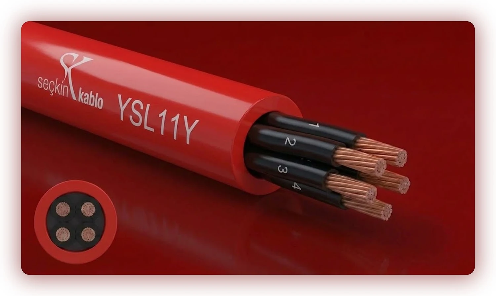
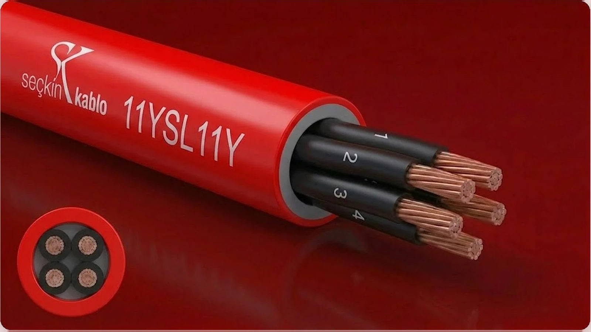

PUR Kabloları
Poliüretan (PUR) kılıflı esnek kumanda kabloları; makine, robot ve hareketli sistemler için yüksek aşınma, yağ, hidroliz ve UV dayanımı. Tek kılıflı YSL11Y ve çift kılıflı 11YSL11Y varyantlarıyla drag chain ve sürüklemeli tesisat uygulamalarında uzun ömürlü çözüm.

YSL11Y
Poliüretan (PUR) tek kılıflı esnek kumanda kablosu; aşınma, yağ ve UV dayanımı istenen makine ve hareketli sistem devrelerinde.
| İç iletken | Bükülü bakır tel (çok telli esnek) |
|---|---|
| İzolasyon | Siyah damar, beyaz numara kodlu |
| Kılıf | PUR (poliüretan) · RAL 3001 kırmızı — aşınma, yağ ve UV |
| Çalışma sıcaklığı | −30 °C … +70 °C |
| Test gerilimi | 2500 V |
| Çalışma gerilimi | 300 / 500 V |
| Bükülme çapı | 7,5 × kablo çapı (sürüklemeli tesisat) |
| Kılıf malzemesi | PUR — yüksek aşınma, yağ, hidroliz ve UV dayanımı |
| Kullanım | Sabit ve hareketli (sürüklemeli) tesisat |
| Kesit (n×mm²) | Kablo çapı (mm Ø) | Bakır ağırlık (kg/km) | Toplam ağırlık (kg/km) |
|---|---|---|---|
| 2 × 0,50 | 4,8 | 9 | 37 |
| 3 × 0,50 | 5,1 | 14 | 40 |
| 4 × 0,50 | 5,5 | 18 | 45 |
| 5 × 0,50 | 6,2 | 23 | 61 |
| 6 × 0,50 | 6,7 | 27 | 72 |
| 7 × 0,50 | 7,3 | 32 | 75 |
Kullanım: CNC tezgahları, montaj hatları, otomotiv üretim, açık hava makineleri.

11YSL11Y
İç ve dış katmanı PUR olan çift kılıflı ağır hizmet kumanda kablosu; drag chain (enerji zinciri) ve yüksek mekanik yüklerdeki hareketli tesisat için.
| İç iletken | Bükülü bakır tel (çok telli esnek) |
|---|---|
| İzolasyon | Siyah damar, beyaz numara kodlu |
| İç kılıf | PUR (poliüretan) |
| Dış kılıf | PUR (poliüretan) · RAL 3001 kırmızı — aşınma, yağ ve UV |
| Çalışma sıcaklığı | −30 °C … +70 °C |
| Test gerilimi | 2500 V |
| Çalışma gerilimi | 300 / 500 V |
| Bükülme çapı | 7,5 × kablo çapı (sürüklemeli tesisat) |
| Kılıf malzemesi | PUR — yüksek aşınma, yağ, hidroliz ve UV dayanımı |
| Kullanım | Ağır hizmet drag chain / sürüklemeli tesisat |
| Kesit (n×mm²) | Kablo çapı (mm Ø) | Bakır ağırlık (kg/km) | Toplam ağırlık (kg/km) |
|---|---|---|---|
| 2 × 0,50 | 4,8 | 9 | 37 |
| 3 × 0,50 | 5,1 | 14 | 40 |
| 4 × 0,50 | 5,5 | 18 | 45 |
| 5 × 0,50 | 6,2 | 23 | 61 |
| 6 × 0,50 | 6,7 | 27 | 72 |
| 7 × 0,50 | 7,3 | 32 | 75 |
Kullanım: robot kolları, portal ve köprü vinçler, enerji zinciri (drag chain), kimyasal tesisler.
Sık Sorulan Sorular — PUR Kabloları
PUR (poliüretan) kılıfın PVC'ye göre avantajı nedir?
PUR kılıf; aşınma, yağ, çözücü kimyasal, hidroliz ve UV dayanımı bakımından PVC'yi büyük farkla geçer. Hareketli ve sürüklemeli tesisatta çok daha uzun ömür sağlar.
YSL11Y ile 11YSL11Y arasındaki fark nedir?
YSL11Y tek katmanlı PUR kılıflıdır. 11YSL11Y ise iç PUR + dış PUR olmak üzere çift kılıflıdır; daha ağır mekanik yüklerde ve enerji zinciri (drag chain) uygulamalarında tercih edilir.
Sürüklemeli (drag chain) tesisatta minimum bükülme yarıçapı nedir?
Sabit tesisatta yaklaşık 4×D, sürüklemeli (hareketli) tesisatta minimum 7,5×D önerilir; drag chain kullanımında üretici uygulama tablosuna göre kontrol edilmelidir.
Hangi ortamlarda kullanılır?
CNC tezgahları, robot kolları, montaj hatları, portal ve köprü vinçler, otomotiv üretim hatları, kimyasal tesisler ve dış hava koşullarına açık makinelerde uzun ömürlü çözümdür.